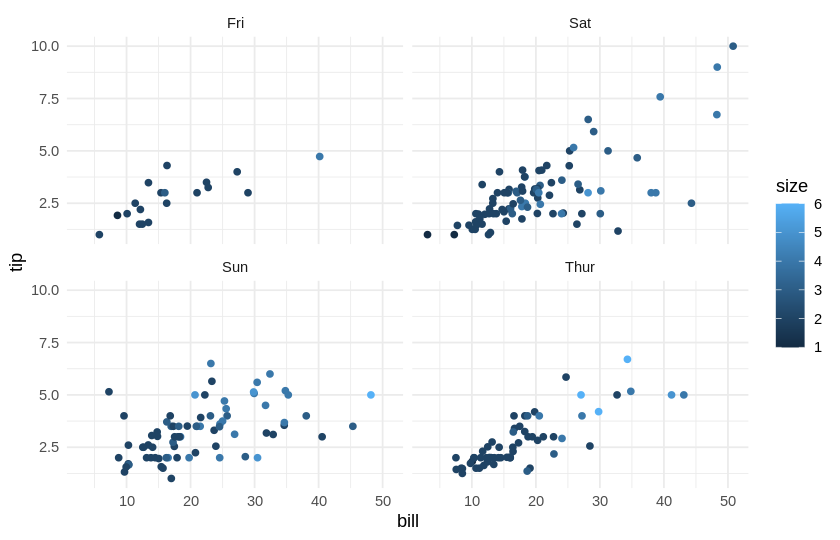
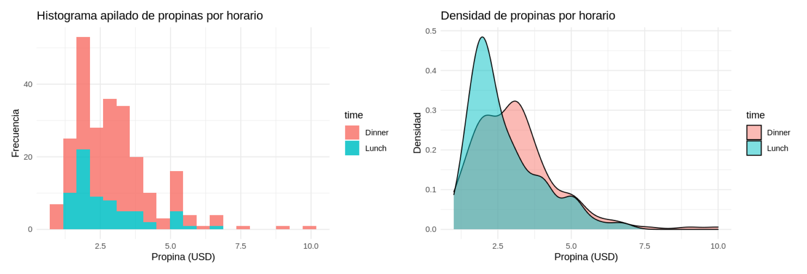
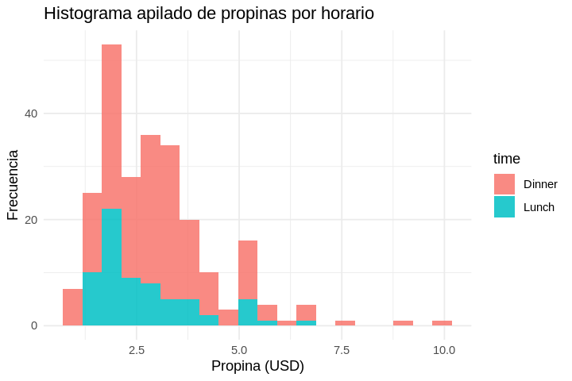
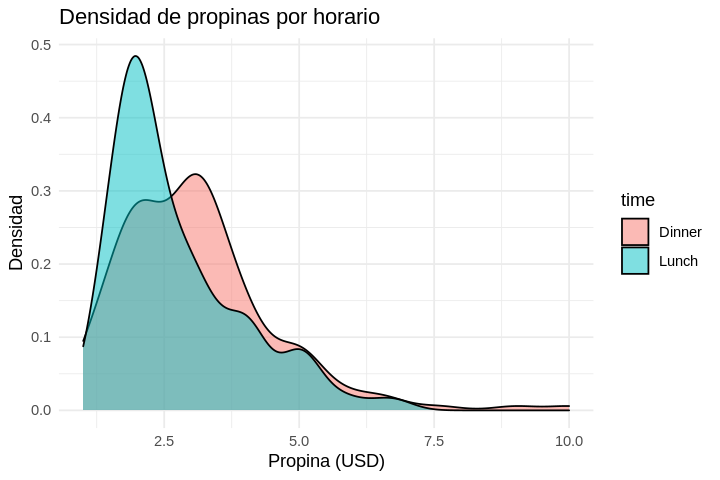
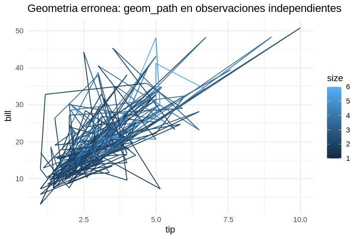

7 Exploración y Visualización de Datos
El cuarto paso del flujo de trabajo OSEMN consiste en explorar los datos. Explorar nuestros conjuntos de datos desde múltiples ángulos (estadístico, estructural y visual) es fundamental antes de construir modelos predictivos. Como destacó John W. Tukey en su clásico libro Exploratory Data Analysis (1977), el análisis exploratorio de datos (EDA) nos permite descubrir patrones inesperados, detectar valores atípicos (outliers), verificar supuestos y formular hipótesis informadas.
En este capítulo abordaremos la exploración y visualización de datos
desde tres perspectivas complementarias dentro de la imagen Docker
dsin:
- Inspección de propiedades estructurales y estadísticas en
Nushell, utilizando los comandos nativos de inspección
(
columns,describe,uniq,histogram), el módulo matemático (math) y el motor de DataFramespolars. - Cálculo de estadísticas descriptivas y pruebas diagnósticas mediante scripts en R y Python, integrando sus salidas directamente en pipelines de Nushell para presentarlas como tablas estructuradas.
- Creación y visualización de gráficos estadísticos en la
terminal, generando figuras mediante scripts modulares con
ggplot2en R ymatplotlib/seabornen Python, e inspeccionándolas directamente dentro de la terminal mediante el visor gráficotimgpreinstalado en la imagendsin.
Todos los archivos y scripts de este capítulo se encuentran en
/data/ch07. Para comenzar, nos posicionamos en este
directorio:
cd /data/ch07A partir de este punto, ejecutaremos todas las actividades dentro de
/data/ch07. Inspeccionemos los archivos disponibles:
ls7.1 Inspeccionando Datos y sus Propiedades
Antes de graficar o modelar un conjunto de datos, necesitamos responder preguntas fundamentales sobre su estructura: ¿cuántas filas y columnas tiene?, ¿qué nombres y tipos de datos poseen las variables?, ¿existen columnas constantes o con valores faltantes?
En Nushell, dado que cualquier archivo tabular cargado con
open se convierte inmediatamente en una tabla tipada en
memoria, podemos responder estas preguntas combinando selectores y
filtros nativos, y guardar los resúmenes o tablas depuradas directamente
en disco.
7.1.1 ¿Tiene Encabezado, Cuántos Registros y Qué Columnas?
Inspeccionemos el archivo venture.csv ubicado en
/data/ch07:
open --raw venture.csv | lines | first 5Al abrirlo de forma estructurada con open venture.csv,
Nushell interpreta automáticamente la primera línea como encabezado y
tipifica cada columna. Podemos consultar el número total de registros
con length y listar los nombres de las columnas junto con
su índice usando columns y enumerate:
open venture.csv | length
open venture.csv | columns | enumerate | first 15
open venture.csv | columns | enumerate | wrap col_info | flatten | save -f venture_columns.csv7.1.2 Inspeccionando Tipos de Datos e Inferencia de Esquemas
Veamos el archivo datatypes.csv, diseñado
específicamente para ilustrar distintos tipos de datos (enteros,
flotantes, booleanos, fechas y cadenas):
open datatypes.csv
open datatypes.csv | save -f datatypes_copy.jsonPara conocer el tipo exacto que Nushell o Polars asignó a cada
columna, podemos emplear describe o convertir la tabla a un
DataFrame de Polars y consultar polars schema:
open datatypes.csv | polars into-df | polars schema | transpose column dtype
open datatypes.csv | polars into-df | polars schema | transpose column dtype | save -f datatypes_schema.csv7.1.3 Identificando Valores Únicos y Eliminando Columnas Constantes
En muchos conjuntos de datos administrativos o financieros (como
venture.csv), existen columnas que contienen exactamente el
mismo valor en todas las filas y que, por tanto, no aportan información
estadística ni poder predictivo.
En Nushell podemos detectar el número de valores únicos de cada
columna trasponiendo el primer registro o iterando sobre los nombres de
las columnas con get y uniq:
let df = open venture.csv
let non_const_cols = $df | columns | where {|c| ($df | get $c | uniq | length) > 1 }
$df | select ...$non_const_cols | first 5
$df | select ...$non_const_cols | save -f venture_clean.csvObserva la claridad del flujo: identificamos programáticamente todas
las columnas con más de un valor único
(uniq | length > 1), filtramos la tabla original
conservando únicamente dichas columnas mediante el operador de expansión
...$non_const_cols, y guardamos el resultado limpio en
venture_clean.csv.
7.2 Calculando Estadísticas Descriptivas
Trabajemos ahora con el clásico conjunto de datos
tips.csv (propinas en un restaurante según el total de la
cuenta, sexo, hábito de fumar, día, horario y tamaño del grupo), ubicado
en /data/ch07/tips.csv:
open tips.csv | first 10
open tips.csv | first 10 | save -f tips_sample.csv7.2.1 Estadísticas con
math y polars summary en Nushell
Nushell incluye la familia de comandos math
(math sum, math avg, math median,
math stddev, math variance,
math min, math max, math mode),
que operan sobre listas numéricas o sobre todas las columnas numéricas
de una tabla:
open tips.csv | select bill tip size | math avg
open tips.csv | select bill tip size | math stddev
open tips.csv | select bill tip size | math median | save -f tips_median.jsonSi deseamos obtener simultáneamente el conteo, media, desviación
estándar, mínimo, cuartiles (25%, 50%, 75%) y máximo de todas las
variables del dataset, polars summary genera una tabla
resumen completa en un solo paso:
open tips.csv | polars into-df | polars summary | polars collect | polars into-nu
open tips.csv | polars into-df | polars summary | polars collect | polars into-nu | save -f tips_summary.csvPara variables categóricas (como day o
time), el comando nativo histogram calcula el
conteo absoluto, cuantiles y porcentaje relativo, incluyendo además un
gráfico de barras ASCII en la propia tabla:
open tips.csv | histogram day
open tips.csv | histogram day | save -f tips_day_freq.csv7.2.2 Transformaciones y Resúmenes Estadísticos con Scripts en R y Python
En un flujo de trabajo políglota, frecuentemente deseamos aplicar
funciones estadísticas especializadas de R (dplyr) o Python
(pandas / scipy) y capturar el resultado de
vuelta en Nushell como una tabla estructurada. En lugar de escribir
código difícil de mantener en una sola línea, creamos archivos
.R y .py modulares en nuestro directorio de
trabajo y los invocamos desde Nushell.
Por ejemplo, revisemos el script mutate_tips.R en
/data/ch07, que calcula el porcentaje de propina
(percent = tip / bill * 100) usando
dplyr::mutate y escribe el CSV resultante en la salida
estándar:
bat mutate_tips.RAl ejecutar Rscript mutate_tips.R y canalizar su salida
hacia from csv, Nushell recibe una tabla tipada que podemos
filtrar, ordenar y guardar en disco:
Rscript mutate_tips.R | from csv | first 10
Rscript mutate_tips.R | from csv | save -f tips_with_percent.csvDel mismo modo, el script summary_tips.R agrupa las
propinas por día y horario (group_by(day, time)) y calcula
el conteo, la cuenta media y la propina media:
bat summary_tips.R
Rscript summary_tips.R | from csv | sort-by mean_tip -r
Rscript summary_tips.R | from csv | sort-by mean_tip -r | save -f tips_grouped_summary.csvY con Python (corr_tips.py), podemos calcular la matriz
de correlación de Pearson entre bill, tip y
size usando pandas y devolverla como tabla a
Nushell:
bat corr_tips.py
python3 corr_tips.py | from csv
python3 corr_tips.py | from csv | save -f tips_correlations.csv7.3 Creando Visualizaciones Estadísticas desde la Línea de Comandos
Las estadísticas resumen nunca sustituyen por completo a la inspección visual (como demuestra el célebre Cuarteto de Anscombe, donde cuatro conjuntos de datos con idéntica media, varianza y correlación exhiben estructuras geométricas radicalmente distintas).
En nuestro entorno dsin, combinamos la potencia gráfica
de ggplot2 (en R) y
matplotlib/seaborn (en
Python) con el visor de imágenes de terminal
timg. Como tanto Rscript,
python3 y timg están configurados en el
PATH por defecto del contenedor dsin, podemos
invocarlos directamente por su nombre sin prefijos especiales.
Veamos primero el script plot_faceted.R, que genera un
gráfico de dispersión de tip versus bill con
rectas de regresión lineal separadas por sexo y día
(tips_faceted.png):
bat plot_faceted.R
Rscript plot_faceted.R
ls tips_faceted.png7.3.1 Visualizando Imágenes
Directamente en la Terminal con timg
En el flujo de trabajo tradicional de los contenedores Docker sin
servidor gráfico X11, el usuario debía copiar cada imagen generada hacia
el sistema anfitrión para poder abrirla. En la imagen dsin,
incluimos timg (Terminal Image and
Video Viewer), una herramienta que renderiza archivos PNG, JPEG,
SVG o incluso animaciones directamente dentro de la terminal utilizando
bloques Unicode de alta resolución o protocolos gráficos avanzados.
[!NOTE] Fidelidad gráfica y resolución original en la terminal: Cuando se utiliza un emulador de terminal moderno compatible con protocolos gráficos en mapa de bits —como el protocolo de gráficos de Kitty (Kitty Graphics Protocol) o Sixel, incorporados de forma nativa en emuladores como Ghostty, Kitty o WezTerm—,
timgdetecta las capacidades del canal y proyecta las imágenes en su resolución nativa píxel por píxel, sin degradación a caracteres de texto. En terminales estándar o conexiones SSH desprovistas de dicho soporte,timgconmuta de forma automática a una matriz de medios bloques Unicode de alta densidad (-g 80x25), garantizando la inspección visual inmediata en cualquier entorno.
Para visualizar cualquier gráfico generado en
/data/ch07, basta con ejecutar:
timg -g 80x25 tips_faceted.png
También podemos mostrar varios gráficos en una cuadrícula comparativa
dentro de la terminal usando la bandera --grid:
Rscript plot_histogram.R
Rscript plot_density.R
timg --grid=2x1 -g 80x25 tips_histogram.png tips_density.png
7.3.2 Alternativa Remota: Copiando
Gráficos con scp
Si te encuentras conectado por SSH desde una terminal antigua que no
soporta color verdadero de 24 bits, siempre puedes descargar la imagen
hacia tu máquina local utilizando scp (secure
copy):
scp usuario@servidor:/data/ch07/tips_faceted.png .7.4 Catálogo de Gráficos Estadísticos con Scripts en R y Python
La gramática de los gráficos (Grammar of Graphics)
implementada en ggplot2 descompone toda visualización
estadística en tres elementos esenciales:
- Datos (
data): el DataFrame tabular que deseamos representar. - Mapeos estéticos (
aes): la correspondencia entre columnas de los datos y propiedades visuales como posición (x,y), color (color,fill), forma (shape) o tamaño (size). - Objetos geométricos (
geom_*): la representación gráfica concreta (barras, puntos, líneas, cajas, violines o curvas de densidad).
En /data/ch07 disponemos de una colección completa de
scripts listos para usar que ilustran los gráficos fundamentales del
análisis exploratorio.
7.4.1 Gráfico de Barras
Para visualizar la distribución de frecuencias de una variable
categórica o discreta, como la cantidad de mesas atendidas por día de la
semana en tips.csv, ejecutamos plot_bar.R:
bat plot_bar.R
Rscript plot_bar.R
timg -g 80x25 tips_bar.png
7.4.2 Histograma
Para inspeccionar la distribución empírica de una variable continua
como el monto total de la cuenta (bill), ejecutamos
plot_histogram.R:
bat plot_histogram.R
Rscript plot_histogram.R
timg -g 80x25 tips_histogram.png
Ajustar el número de intervalos (bins) es crucial para
evitar tanto el sobre-suavizado (pocas barras que ocultan
multimodalidad) como el ruido excesivo (demasiadas barras
estrechas).
7.4.3 Gráfico de Densidad
Una alternativa suave al histograma es la estimación de densidad por
núcleos (Kernel Density Estimation, KDE), implementada en
plot_density.R:
bat plot_density.R
Rscript plot_density.R
timg -g 80x25 tips_density.png
7.4.4 Gráfico de Líneas para Series Temporales
Cuando trabajamos con registros indexados en el tiempo, como la serie
de fallecimientos mensuales por accidentes de tránsito en el Reino Unido
(Fatalities.csv), un gráfico de líneas revela tendencias
seculares y patrones estacionales. Veamos y ejecutemos
plot_accident.R:
open Fatalities.csv | first 5
open Fatalities.csv | first 5 | save -f fatalities_head.csv
bat plot_accident.R
Rscript plot_accident.R
timg -g 80x25 fatalities_line.png
7.4.5 Diagrama de Dispersión y Tendencia
Para estudiar la relación conjunta entre dos variables cuantitativas
continuas (bill y tip), utilizamos
plot_scatter.R y plot_trend.R:
bat plot_scatter.R
Rscript plot_scatter.R
bat plot_trend.R
Rscript plot_trend.R
timg --grid=2x1 -g 80x25 tips_scatter.png tips_trend.png
7.4.6 Diagrama de Caja y Gráfico de Violín
Para comparar la distribución de una variable continua
(bill) a través de varios grupos categóricos
(day), los diagramas de caja (boxplots) resumen la
mediana, el rango intercuartílico
()
y los valores atípicos, mientras que los gráficos de violín muestran
además la forma completa de la densidad en cada grupo:
bat plot_boxplot.R
Rscript plot_boxplot.R
bat plot_violin.R
Rscript plot_violin.R
timg --grid=2x1 -g 80x25 tips_boxplot.png tips_violin.png
7.4.7 Visualización Estadística Equivalente en Python
También podemos generar visualizaciones multipanel desde Python
ejecutando plot_tips_py.py, el cual produce el archivo
tips_python.png y devuelve en formato JSON las estadísticas
por día hacia Nushell:
bat plot_tips_py.py
python3 plot_tips_py.py | from json
python3 plot_tips_py.py | from json | save -f tips_py_summary.json
timg -g 80x25 tips_python.png
7.5 Resumen
En este capítulo aprendimos a explorar tanto la estructura como la
distribución estadística de nuestros datos desde la línea de comandos.
Combinamos la inspección nativa de tablas en Nushell
(columns, uniq, math,
histogram, polars summary) con scripts
modulares en R y Python (mutate_tips.R,
summary_tips.R, corr_tips.py,
plot_*.R, plot_tips_py.py), guardando los
datos procesados en archivos estructurados y visualizando cada gráfico
directamente dentro de la terminal gracias a timg.
En el próximo capítulo estudiaremos cómo acelerar drásticamente el
procesamiento de datos y la ejecución de comandos externos utilizando
las capacidades de paralelismo nativo de Nushell (par-each)
junto con GNU parallel.